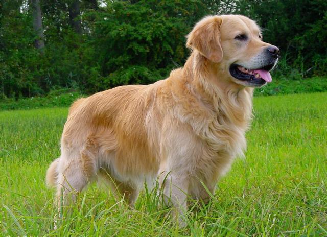

ოქროსფერი ლაბლადორი

ლაბრადორ რეტრივერი (იგივე ლაბრადორი) — ერთ-ერთი ყველაზე პოპულარული ძაღლის ჯიშია. ეს ძაღლი განთქმულია, როგორც მონადირე წყლიან და ჭაობიან ადგილებში მობინადრე ნადირზე. ასევე, ფართოდაა გავრცელებული კომპანიონი ძაღლის სახით. იგი ადვილად ექვემდებარება წვრთნას. მთელ მსოფლიოში ითვლება ერთ-ერთ ინტელიგენტურ და დაჯილდოებულ ძაღლად. აღწერა გარეგნობა ლაბრადორი შედარებით დიდი ტანის იზრდება. მამალი საშუალოდ 29–36 კილოგრამს იწონის, დედალი კი 25-32 კგ-ს. ამ ჯიშის გარეგნული თვისებების უმრავლესობა გამომდინარეობს იქიდან, რომ თავდაპირველად იგი შეიქმნა როგორც მუშა ძაღლი. აქვს მოკლე და სწორი ბეწვი, რომელსაც წლის განმავლობაში ორჯერ იცვლის, ან რეგულარულად მთელი წლის განმავლობაში, ზომიერ სარტყელში. კუდი საკმაოდ დიდი და ძლიერი აქვს. წავისებური კუდი და აპკიანი თათები შესანიშნავ მოცურავედ აქცევს ამ ჯიშს. ამაში ხელს უწყობს ბეწვიც, რომელიც არ ატარებს წყალს. ლაბრადორი, ზოგიერთ სხვა ჯიშთან ერთად, გამოირჩევა იმით, რომ არ ხრის უკანა ფეხებს წოლისას.